AERIS
Análise Eletrônica de Riscos e Indicadores Socioambientais
Uma estação que lê o ar — temperatura, umidade, vento e solo — para alertar sobre o risco de queimadas. Este é o diário de bordo de como ela nasceu, encontro a encontro.
Do latim, “do ar”.
Aeris é uma estação de monitoramento das condições ambientais com termo-higrômetro, focada em identificar indicadores de risco de incêndio em áreas propícias. Os dados aparecem num display e, quando o risco sobe, a estação avisa com luz e som — pensando também em pessoas com deficiência visual.
Temperatura e umidade do ar
Sensor DHT22 acompanha as condições do ambiente em tempo real.
Vento e solo
Anemômetro mede a ação do vento; o FC-28 mede a umidade do solo.
Alerta de risco
Display 20x4 mostra o status; LED RGB e buzzer sinalizam o perigo.
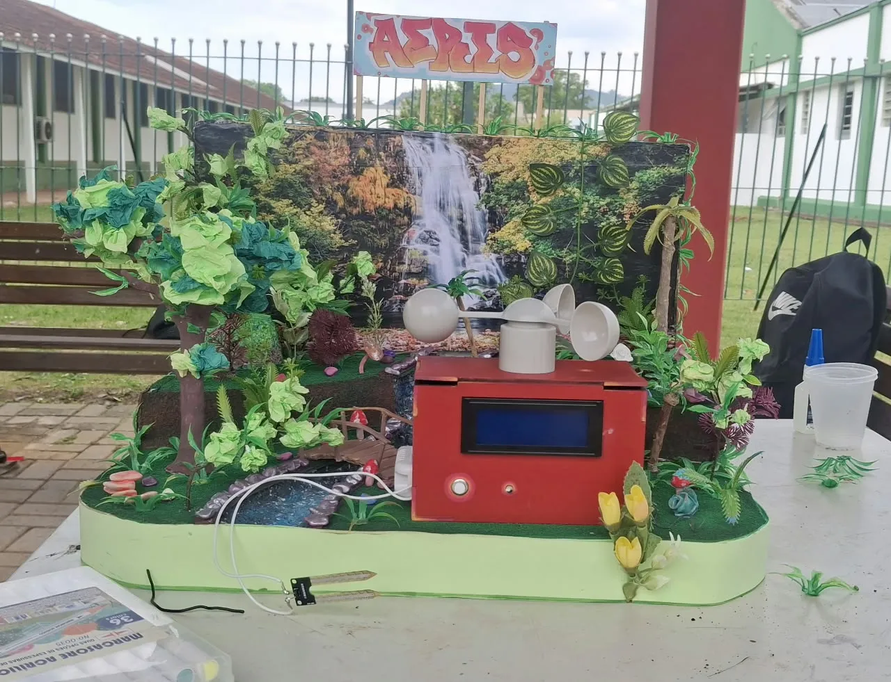
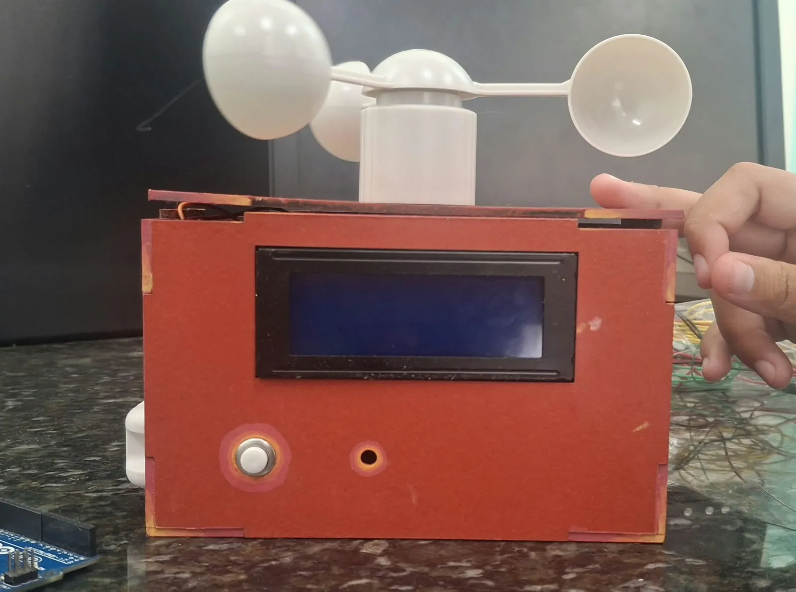
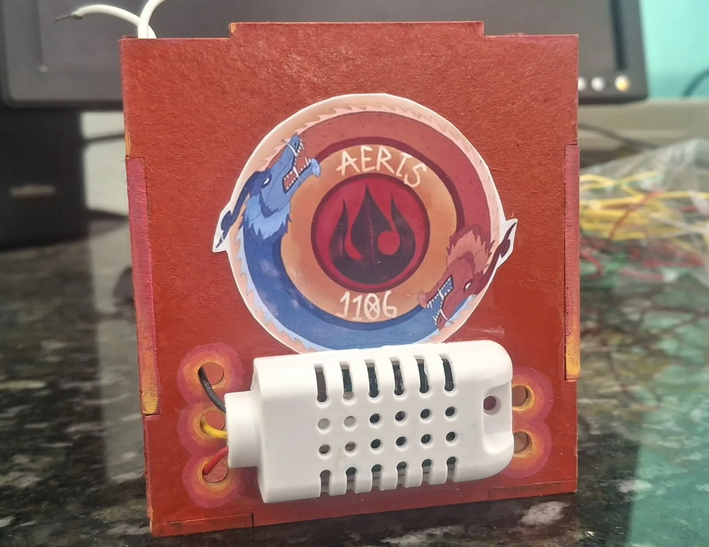
Quem acendeu essa ideia
No 8º encontro o grupo se dividiu em pilares, de acordo com a facilidade e disponibilidade de cada integrante.
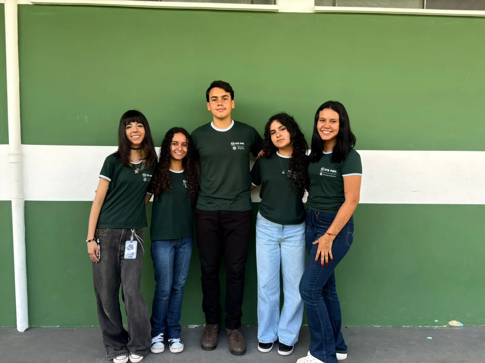
25 encontros, de julho a outubro
Cada reunião registrada pelo grupo — com as ideias que ficaram, as que foram abandonadas e as fotos do caminho. Os pontos acesos marcam as grandes viradas.
Lista de componentes
Tudo o que vive dentro (e em cima) da caixa vermelha.
Por dentro do Aeris
Simulação e circuito
Circuito funcional desenvolvido no Tinkercad, com as conexões do Arduino aos componentes. É uma imagem ilustrativa do funcionamento — não literalmente a montagem real.
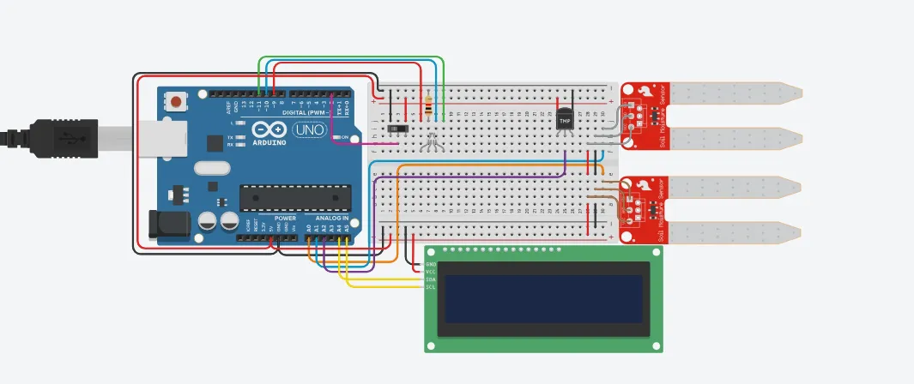
Programação
Código do Arduino que gerencia e controla os sensores e componentes — primeiro testados um a um, depois integrados no código oficial.
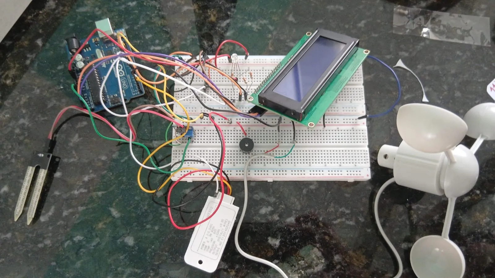
Protótipo sujo
Os primeiros rabiscos: aparência, organização e estrutura da estação.
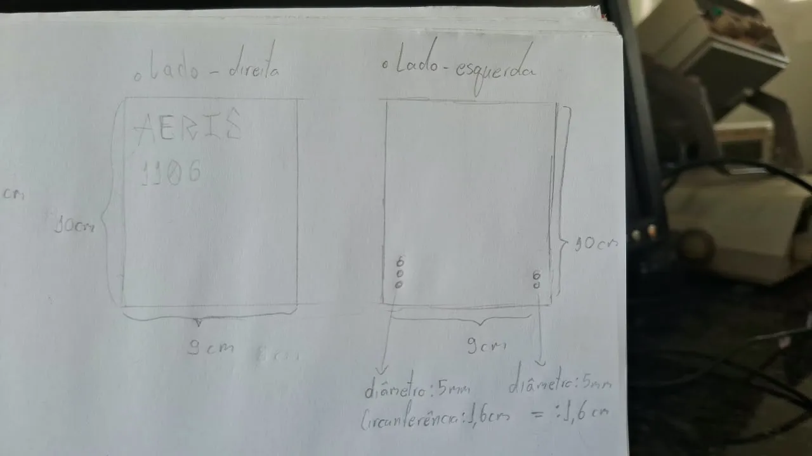
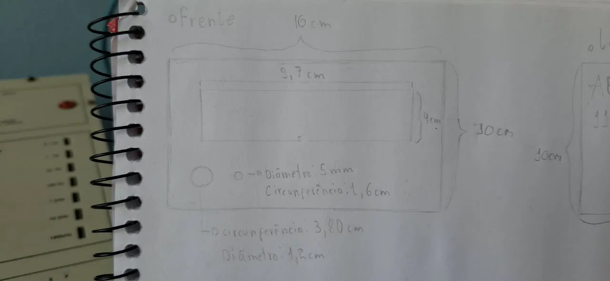
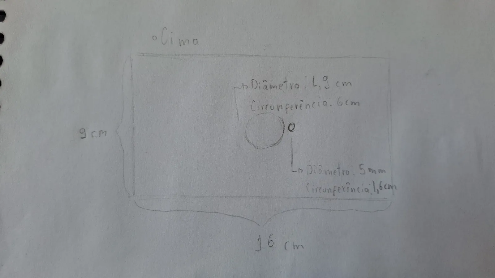
Diagrama em blocos
As principais ligações, entradas e saídas de dados do sistema.
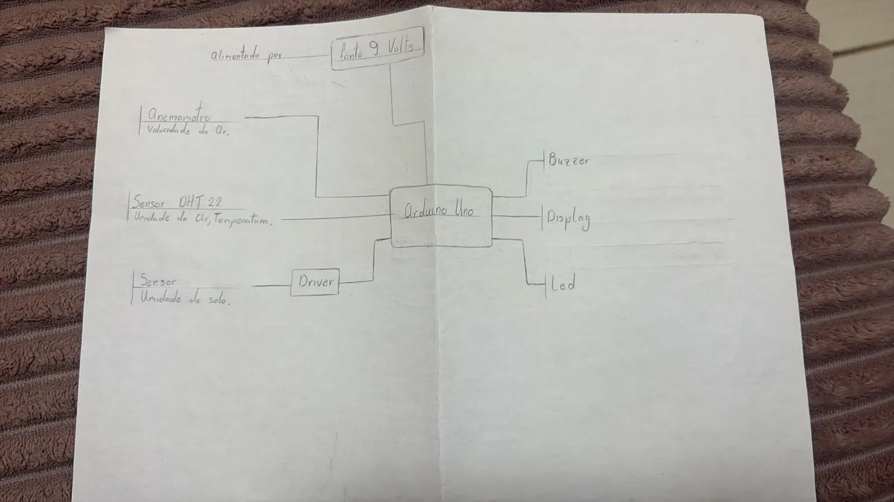
Identidade do Aeris
As logos foram desenhadas à mão, em referência a Avatar: A Lenda de Aang — o elemento fogo carrega a ambiguidade do projeto: é o que o Aeris vigia e o que dá nome à sua energia.
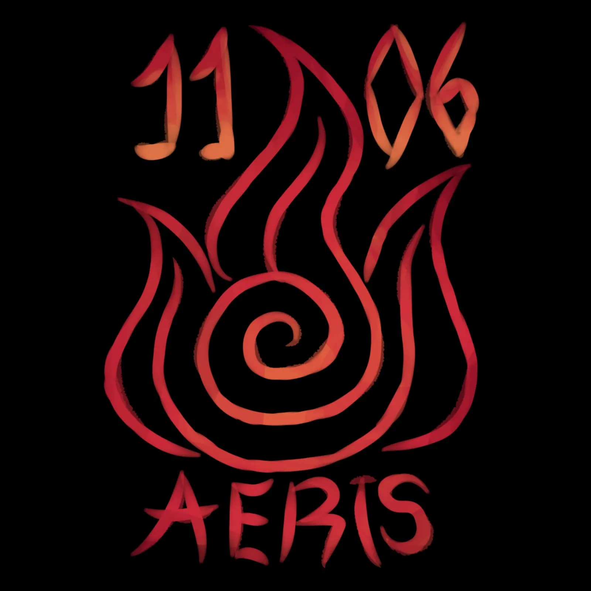
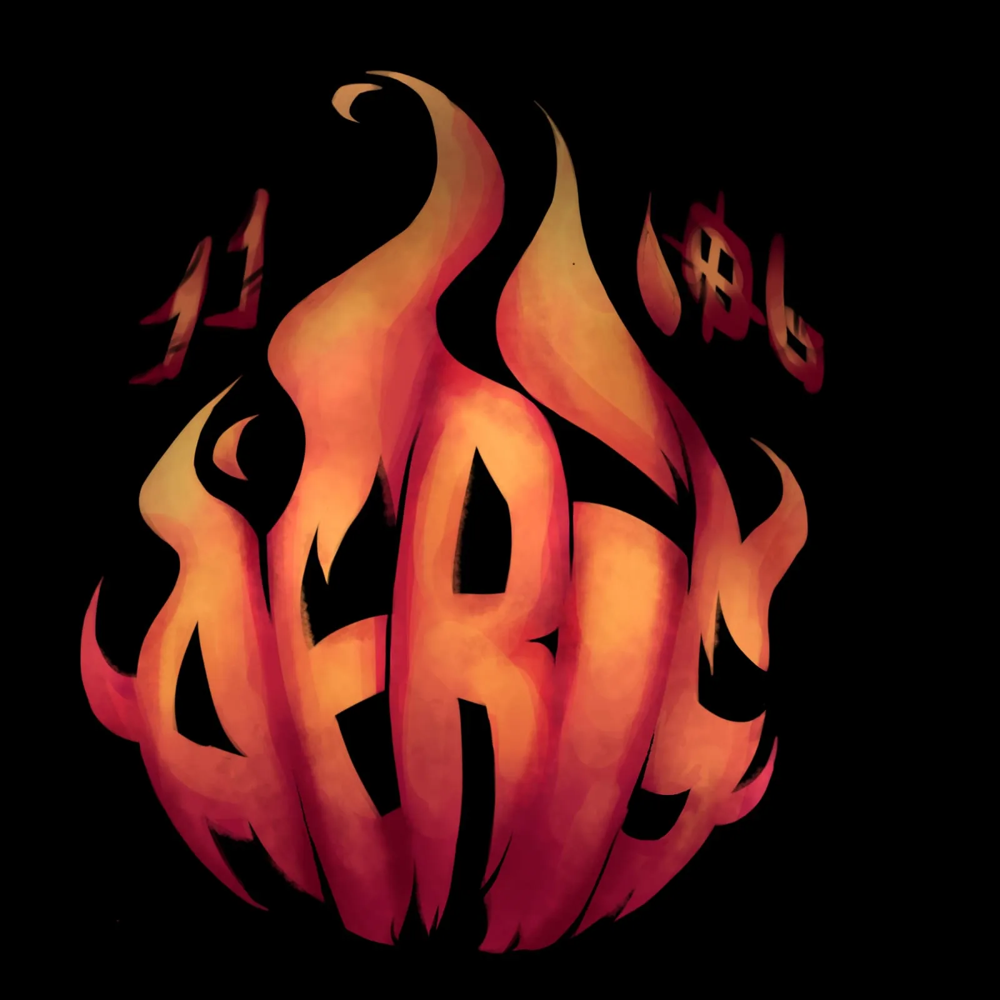
“Encerramos um ciclo duradouro de cooperatividade e, principalmente, de amizade verdadeira. Obrigada, ETE FMC — foi uma experiência inesquecível!”
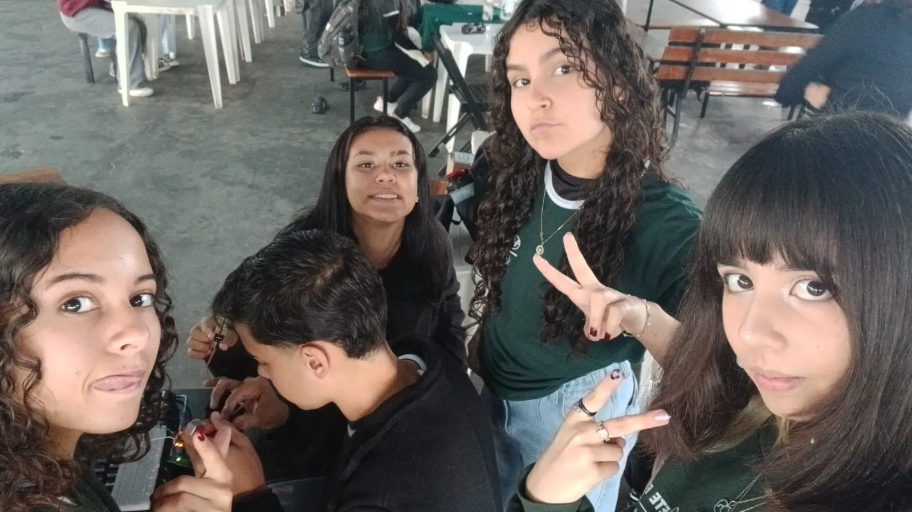
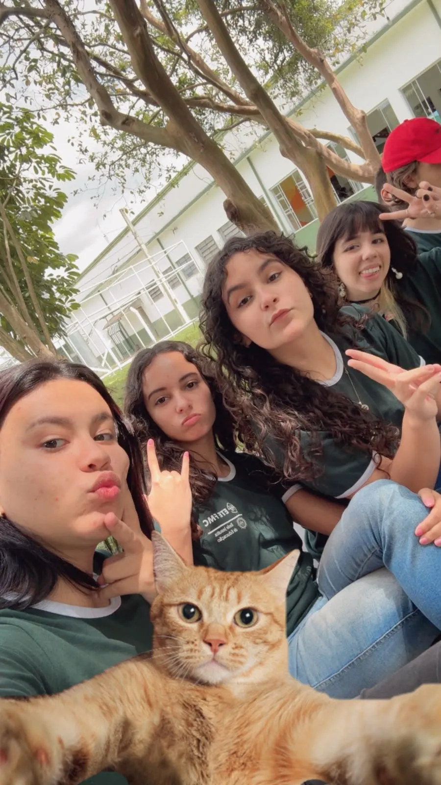